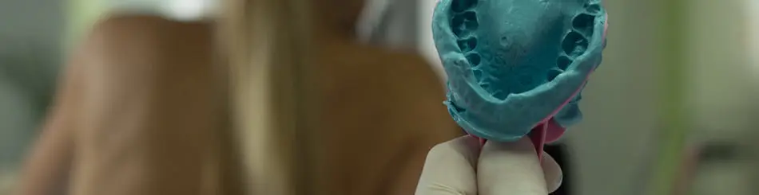
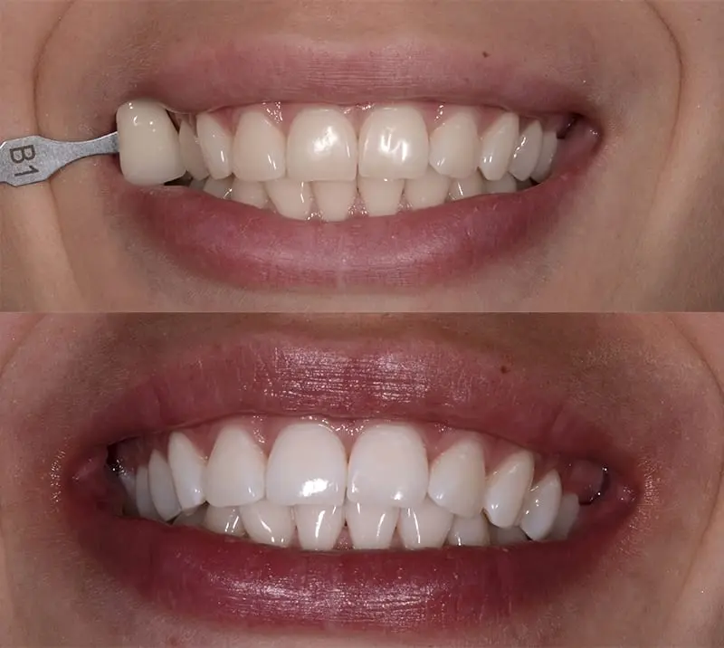

Často stačí pouze zlepšit hygienu dutiny ústní a používat k tomu vhodné techniky a pomůcky, se kterými vám vždy ráda poradí naše dentální hygienistka. Pokud se svým úsměvem nejste spokojení i přes to, že se o své zuby pečlivě staráte, může Vám pomoci naše inovované bělení zubů.

Bělení zubů a bělící prostředky
Bělení zubů spočívá v procesu oxidace pigmentů, při kterém se na zuby aplikují bělicí systémy, obsahující nejčastěji peroxid vodíku a karbamid peroxidu vodíku, které proniknou do struktury zubu a vybělí veškerá zabarvení. Po kompletním vyčištění zevních nečistot (zubního kamene, pigmentu) zvládneme chemickou cestou vylepšit barvu zubů o několik odstínů. Podmínkou ale je řádně ošetřený a čištěný chrup bez kazů a zánětů dásní.
Bělicí prostředky běžně dostupné v obchodech vykazují pouze nepatrnou účinnost, jelikož mohou obsahovat maximálně 0,1 % peroxidu. Kdežto prostředky schválené pro domácí použití pod lékařským dohledem až 6 % H2O2.
Domácí bělení zubů pod lékařským dohledem – vnější
Domácí metoda bělení zubů je sice pomalejší, ale má poměrně trvanlivé výsledky a výrazně menší citlivost. Při domácím bělení se bělicí činidlo (gel) aplikuje do individuálně zhotovených nosičů. Ty vytvoříme v ordinaci na základě vašich otisků zubů. Následně vám je spolu s činidlem a podrobným vysvětlením postupu bělení předá Vaše dentální hygienistka.
Nosiče spolu s bělicím činidlem se nasazují na určitou dobu během dne (většinou 1-2 hodiny, po dobu 10-12 dní). Záleží na výrobci bělicích činidel, stavu Vašich zubů a na vaší představě o výsledku bělení. Zároveň doporučujeme tuto metodu kombinovat s použitím remineralizačních prostředků. V případě jakýchkoli dotazů se obraťte na svou dentální hygienistku.
Vedlejší účinky bělení a následná péče
Bělením zubů podle pravidel a pod dohledem nedochází k žádnému poškození zubů, musíte ale dodržovat všechny pokyny dentální hygienistky a zubního lékaře. Přechodně může dojít ke zvýšené citlivosti zubů, které je způsobeno dehydratací zubů působením peroxidu vodíku. Tyto potíže však nejpozději do druhého dne vymizí. Dnešní techniky bělení již umožnují vynechat nepříjemnou tzv. bílou dietu. To znamená, že pokud nechcete, nemusíte se během a po bělení vyhýbat veškerým pigmentovaným potravinám a nápojům (červené víno, káva, černý čaj, kolové nápoje, sójová omáčka, borůvky, čokoláda apod.). Myslete však na to, že udržení výsledné barvy zubů záleží na Vaší životosprávě a důkladně dodržované hygieně dutiny ústní. A samozřejmostí jsou i preventivní kontroly. Proceduru lze opakovat zhruba po 1,2 a 12ti měsících.
Vnitřní bělení – technika walking bleach
Může se stát, že jsou zuby dekolorované/zabarvené hluboko uvnitř a pouhým vnějším bělením není možné dosáhnout požadovaného výsledku. Většinou se jedná o poúrazové stavy, mrtvé a nedokonale endodonticky ošetřené zuby, hluboké amalgámové výplně apod. Vnitřní bělení spočívá v odstranění pigmentů z korunkové části zubu, desinfekci a aplikaci bělicí vložky do zubu. Vložka se překryje uzávěrem a pacient funguje v módu “walking bleach”. Tedy čeká, jaký bude výsledek bělení. Bělicí vložku lze několikrát vyměnit, pokud je to třeba k dosažení očekávaného výsledku. Teprve poté se otvor po aplikaci vložky definitivně uzavře a je hotovo.

Proces bělení zůbu před a po bělení